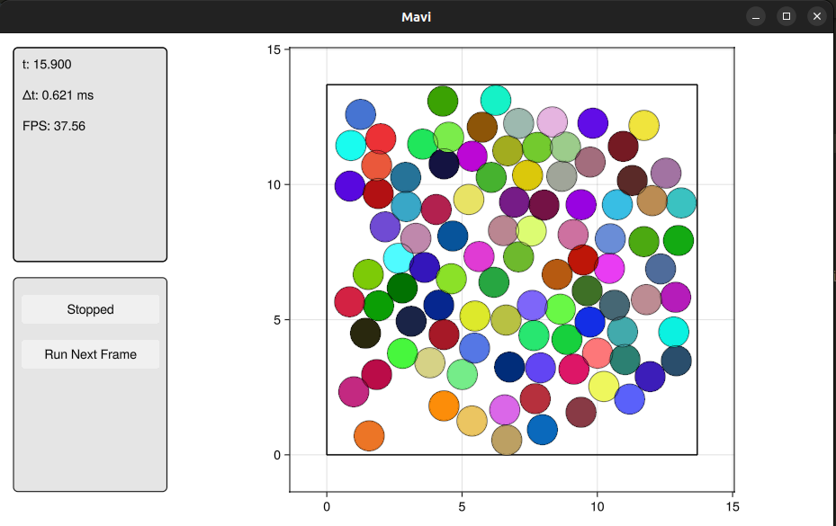
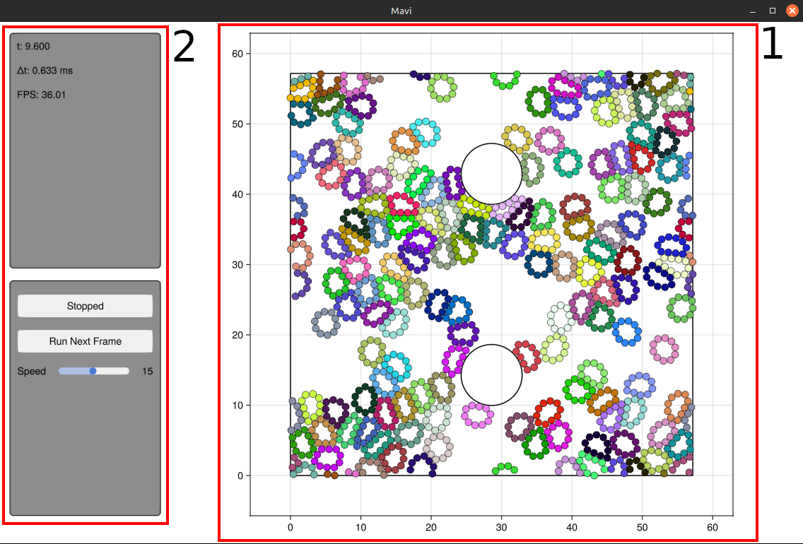

Manual
Installation
The easiest way to install Mavi is:
- Open the Julia REPL and enter package manager mode (by pressing
]at the empty REPL prompt) - Execute the command:
pkg> add https://github.com/marcos1561/Mavi.jl.git Quick Start
Let's create a gas of particles. The first thing we need to do is create the system's state. Particles' positions will be initialized at the vertices of a rectangular grid with random velocities. To initialize the positions, we need to know the particle radius, which is defined by the interaction potential between them (in this example we will use a Lennard-Jones potential). The particle radius can be accessed via the particle_radius() function:
using Mavi.Configs
using Mavi.States
using Mavi.InitStates
function main()
# Init state configs
num_p_x = 10 # Number of particles in the x direction
num_p_y = 10 # Number of particles in the y direction
offset = 0.4 # Space between particles
num_p = num_p_x * num_p_y
dynamic_cfg = LenJonesCfg(sigma=1, epsilon=1) # Interaction potential between particles
radius = particle_radius(dynamic_cfg)
# rectangular_grid returns positions in a rectangular grid (`pos`) and
# a rectangular geometry configuration that contains all positions (geometry_cfg)
pos, geometry_cfg = rectangular_grid(num_p_x, num_p_y, offset, radius)
# Creating a state compatible with Newton's Second Law
state = SecondLawState(
pos=pos,
vel=random_vel(num_p, 1/5),
)
endNext, we need to specify the space where the particles live. Luckily, rectangular_grid() already gives us a geometry configuration that contains all the positions created, we only need to specify how the walls behave (we will use rigid walls)
using Mavi.Configs
using Mavi.States
using Mavi.InitStates
function main()
# Init state configs
num_p_x = 25 # Number of particles in the x direction
num_p_y = 25 # Number of particles in the y direction
offset = 0.4 # Space between particles
num_p = num_p_x * num_p_y
dynamic_cfg = LenJonesCfg(sigma=1, epsilon=1) # Interaction potential between particles
radius = particle_radius(dynamic_cfg)
# rectangular_grid returns positions in a rectangular grid (`pos`) and
# a rectangular geometry configuration that contains all positions (geometry_cfg)
pos, geometry_cfg = rectangular_grid(num_p_x, num_p_y, offset, radius)
# Creating a state compatible with Newton's Second Law
state = SecondLawState(
pos=pos,
vel=random_vel(num_p, 1/5),
)
# Creating space configurations
space_cfg = SpaceCfg(
wall_type=RigidWalls(),
geometry_cfg=geometry_cfg,
)
endNow we can put it all together in a System and animate!
using Mavi
using Mavi.Configs
using Mavi.States
using Mavi.InitStates
using Mavi.Visualization
function main()
# Init state configs
num_p_x = 10 # Number of particles in the x direction
num_p_y = 10 # Number of particles in the y direction
offset = 0.4 # Space between particles
num_p = num_p_x * num_p_y
dynamic_cfg = LenJonesCfg(sigma=1, epsilon=1) # Interaction potential between particles
radius = particle_radius(dynamic_cfg)
# rectangular_grid returns positions in a rectangular grid (`pos`) and
# a rectangular geometry configuration that contains all positions (geometry_cfg)
pos, geometry_cfg = rectangular_grid(num_p_x, num_p_y, offset, radius)
# Creating a state compatible with Newton's Second Law
state = SecondLawState(
pos=pos,
vel=random_vel(num_p, 1/5),
)
# Creating space configurations
space_cfg = SpaceCfg(
wall_type=RigidWalls(),
geometry_cfg=geometry_cfg,
)
system = System(
state=state,
space_cfg=space_cfg,
dynamic_cfg=dynamic_cfg,
int_cfg=IntCfg(dt=0.01), # Configurations related to how the system is integrated, such as the time step (dt)
)
animate(system)
endAfter running main(), you should see this:

Mavi Philosophy
Every system of particles is represented by the same struct System, whose main members are:
- state: Data representing the particles' states.
- space_cfg: Information about the geometry of the space (including boundary behavior) where the particles are located.
- dynamic_cfg: Configuration of the dynamics between particles.
- int_cfg: Configuration of how to integrate the equations of motion.
In order to make things work, all these members' types are parametric, so Julia's multiple dispatch mechanism can shine.
A System should be integrated by a function that executes one time step at a time. Usually, a step function looks like this:
function step!(system)
clean_forces!(system) # Sets forces array to zero
calc_forces!(system) # Calculates all the forces
update!(system) # Integrates equations of motion
walls!(system) # Resolves wall collisions
endMavi already has some step functions (see integration.jl), but users are free to create their own.
About System Members
In this section we will talk about the main system's members: what they represent and how to create them.
State
The state of a system is defined by the equations that govern its dynamics. For example, an ordinary, linear, second-order differential equation in $x(t)$ requires that two variables be stored in memory (the variable $x$ itself and its derivative $\dot x$). States must be subtypes of State{T} (see states.jl for examples), where T is the number type (Int32, Float64, etc). Currently, two states are implemented in the core Mavi.States module:
SecondLawState: hasposandvelas members, both of which must be $2 \times N$ matrices orVector{SVector}. This state is useful when the equation to be solved is Newton's second law.SelfPropelledState: a state related to a system of particles with overdamped dynamics and a self-alignment mechanism.
The following example creates a state with 3 particles using SecondLawState.
using Mavi.States
state = SecondLawState(
pos = [1 2 3; 1 2 3],
vel = [1.1 0.4 3; 1.2 2 -0.4],
)SpaceCfg
The space of a system is described by its geometric shape and how its boundaries behave:
- Space geometry: These are structures that inherit from
GeometryCfgand contain all the necessary information to describe the geometry of the space. Examples:RectangleCfgandCircleCfg.
Boundary behavior: These are structures that inherit from WallType and do not necessarily need to have any fields; they simply indicate the boundary type. Examples: RigidWalls and PeriodicWalls.
SpaceCfg encapsulates these two structures. See configs.jl for more details.
Example: Configuring a rectangle with its bottom-left corner at the origin and with periodic boundaries:
using Mavi.Configs
space_cfg = SpaceCfg(
geometry_cfg=RectangleCfg(
length=5,
height=10,
),
wall_type=PeriodicWalls(),
)DynamicCfg
This object should have configurations about the interactions between particles, such as potential parameters. Every instance is a subtype of DynamicCfg.
As examples, Mavi.Configs module has these potential structures:
- Harmonic Truncated Potential:
HarmTruncCfg(ko, ro, ra) - Lennard-Jones Potential:
LenJonesCfg(sigma, epsilon)
Details about parameters can be found in configs.jl.
DynamicCfg is used to calculate forces, users should only implement a method for calc_interaction(i, j, dynamic_cfg, space_cfg) (inside module Mavi.Integration), where i and j are particle indices (more info in its documentation integration.jl).
Also, particles radius should be inferred from these configurations, so there exists a function particle_radius(dynamic_cfg).
IntCfg
Configurations for how the equations of motion should be integrated. Every instance is a subtype of AbstractIntCfg. The default integration configuration inside Mavi.Configs is IntCfg, which has two main members:
- dt: Time step used in the integration.
- chunks_cfg: Configurations of the technique used to speed distance calculations: the system is divided into boxes, or chunks, and the interaction between particles is calculated only for neighboring boxes, greatly reducing the simulation time for short range interactions. If its value is
nothing, then this technique is not used.
The following example creates a system with a circular space, using the Lennard-Jones potential and simple time integration:
using Mavi
using Mavi.Configs
system = System(
state=state, # assuming the state has already been created
space_cfg=CircleCfg(radius=10),
dynamic_cfg=LenJonesCfg(sigma=2,epsilon=4),
int_cfg=IntCfg(dt=0.01),
)About the step function
The step function should evolve a System in one time step. The actions usually needed to perform a time step are:
- calculate forces
- integrate equations of motion
- resolve wall collisions
Mavi already has a general system to compute pair interactions, some ready to use functions to integrate equations of motion (such as Newton's Second Law) and wall collisions resolvers, but users are free to create their own methods as specified below.
How to use custom forces?
Forces are calculated based on DynamicCfg with the function calc_interaction(i, j, dynamic_cfg, system) (which is in the module Mavi.Integration and in the file integration.jl). So, one can use custom forces creating a new DynamicCfg and a method for calc_interaction
Example: Let's create a constant radial force (with modulus force) applied only when the distance between particles is less than min_dist
using Mavi.Configs
using Mavi.Integration
# New DynamicCfg struct
struct RadialForce <: DynamicCfg
force::Float64
min_dist::Float64
end
# Creating new method used in the forces calculation.
function Integration.calc_interaction(i, j, dynamic_cfg::RadialForce, system)
pos = system.state.pos
dr = calc_diff(pos[i], pos[j], system.space_cfg)
dist = sqrt(sum(dr.^2))
force = dynamic_cfg.force
min_dist = dynamic_cfg.min_dist
if dist > min_dist
return zero(eltype(pos))
end
return force * dr / dist
end
# This method is used to draw the particles
Configs.particle_radius(dynamic_cfg::DynamicCfg) = dynamic_cfg.min_dist/2After that, a System can be created as usual, with dynamic_cfg set to RadialForce. A complete example can be found here custom_force.jl.
Note: The function that computes all the pairwise forces is
calc_forces!(), it is inside the moduleMavi.Integrationand in the fileintegration.jl.
How to use different equations of motion?
Just create your own step function with the appropriate equations' of motion. Remember, you can reuse the general method to compute pairwise forces (calc_forces!()) and wall collision detections, thus just focusing on the equations of motion.
Mavi already has functions to integrate some equations of motion, such as:
update_verlet!: Newton Second Law integrated using the verlet method.update_rtp!: Run-and-Tumble particles.update_szabo!: Szabo particles, which follow the equations of motion introduced in the paper "Phase transition in the collective migration of tissue cells: experiment and model" by Szabó, B., et al. (Physical Review E, 2006).
How do wall collisions work?
The method walls!(system, space_cfg) (inside module Mavi.Integration) is responsible for resolving wall collisions. It dispatches on space_cfg, therefore, for instance, to implement rigid walls in a rectangular geometry (this method is already implemented on Mavi.jl), one should create the method
function walls!(system, space_cfg::SpaceCfg{RigidWalls, RectangleCfg})
...
endwalls! should directly change the state in system, resolving the collisions.
Note: See more about how
Mavideals with wall collisions in the blog post Mavi's Space System.
Physical Quantities
The Quantities module contains functions that return physical quantities of interest. Currently, two of them are defined:
Kinetic energy: The system's kinetic energy is calculated by the function
kinetic_energy(state), which takes the system's state as a parameter. Since it depends only on the velocities, it is independent of the chosen dynamic configuration.Potential energy: The system's potential energy is calculated by the function
potential_energy(system, dynamic_cfg), which takes the system and the dynamic configuration as arguments, since it depends on the chosen interaction between particles. The user should ensure that the correct dispatch for thepotential_energy()function is defined for any custom dynamic configuration.
The example print_energy.jl uses these functions.
Running Experiments
To collect data with simulations, we need to run an experiment. To create an experiment, one needs a system and a Collector (object that collects data while the simulation is running). Let's demonstrate how to run an experiment in Mavi:
Given we have a function create_system (which creates a system), the first thing to do is to create the experiment configurations
using Mavi.Experiments
system = create_system()
experiment_cfg = ExperimentCfg(
tf=10, # Final simulation time
root="experiment_data", # Where the experiment data will be saved
)next, we need to create the collector configurations, it's possible to use existing ones or create a custom collector, let's use the DelayedCol, which always have the system state some time in the past (this collector is useful to have the state system just before something bad happens, allowing the coder to investigate what is happening)
using Mavi.Experiments
system = create_system()
experiment_cfg = ExperimentCfg(
tf=10, # Final simulation time
root="experiment_data", # Where the experiment data will be saved
)
collector_cfg = DelayedCfg(
delay_time=4, # How far in the past the state is
)now we can create an experiment and run it
using Mavi.Experiments
system = create_system()
experiment_cfg = ExperimentCfg(
tf=10, # Final simulation time
root="experiment_data", # Where the experiment data will be saved
)
collector_cfg = DelayedCfg(
delay_time=4, # How far in the past the state is
)
experiment = Experiment(experiment_cfg, collector_cfg, system)
run_experiment(experiment)all data collected by the Collector and other things will be inside in the root path, specified when creating ExperimentCfg. Here's a list (not complete) of what is saved in an experiment:
- data: data collected by the
Collector. - final_state: system state just after the experiment finished.
- configs.json: system configurations used.
- experiment_configs.json: experiment configurations used.
Using checkpoints
If your experiment takes a lot of time, it's a good ideia to run the experiment with checkpoints, in that way, an experiment can be resumed from a checkpoint if something bad happens. To do that, simply pass a CheckpointCfg to ExperimentCfg
experiment_cfg = ExperimentCfg(
tf=10,
root="experiment_data",
checkpoint_cfg=CheckpointCfg(delta_time=2), # Creates a checkpoint every two seconds (in simulation time)
)and here is how to resume an experiment from a checkpoint
using Mavi.Experiment
experiment = load_experiment("path-to-experiment")
run_experiment(experiment)Visual Interface
Mavi has a visual interface (built entirely with Makie) whose purpose is to serve as a visual debugging tool for the system being explored. The UI structure essentially has two main elements:
- A plot where the system's particles are rendered in real time.
- A panel showing some information and buttons to control the animation.
<img src="docs/images/ui_components.png" alt="Componentes da UI" width="500"/>

Animating the system
To animate a system, simply call the function animate inside the module Mavi.Visualization
using Mavi.Visualization
# Creating the system
system = ...
animate(system)and if you have a custom step function called my_step!
using Mavi.Visualization
# Creating the system
system = ...
animate(system, step_func=my_step!)It is possible to configure aspects of the animation by passing an instance of AnimationCfg to animate. The following example animates the system with the FPS set to 30, executing 15 time steps per animation frame:
using Mavi.Visualization
# Creating the system
system = ...
anim_cfg = AnimationCfg(
fps=30,
num_steps_per_frame=15,
)
animate(system, anim_cfg)Extending the Information Panel
It is possible to inject custom information into the information panel. This is done by setting the custom_items field of DefaultInfoUICfg, which in turn is a field of AnimationCfg. custom_items is a function that should return the additional information to be displayed in the information panel. For more details about its signature, see the documentation in info_ui.jl.
The following example uses a system already defined in Mavi.jl and adds the position of the first particle to the information panel.
# Creating a System
system = System(
state = SecondLawState(
pos=[[1 2 3]; [1 2 3]],
vel=[[1 1 0]; [-1 0 2]],
),
space_cfg=SpaceCfg(
wall_type=RigidWalls(),
geometry_cfg=RectangleCfg(length=4, height=4),
),
dynamic_cfg=LenJonesCfg(sigma=1, epsilon=0.1),
int_cfg=IntCfg(dt=0.01),
)
# Function used to show particle position
# in the information panel
function get_pos(system, _)
pos = system.state.pos[1]
pos_formatted = @sprintf("(%.3f, %.3f)", pos[1], pos[2])
return [("pos[1]", pos_formatted)]
end
anim_cfg = AnimationCfg(
info_cfg=DefaultInfoUICfg(
custom_items=get_pos
),
graph_cfg=MainGraphCfg((
CircleGraphCfg(), # Render particles as circles
NumsGraphCfg(), # Show particle indices
))
)
animate(system, anim_cfg)